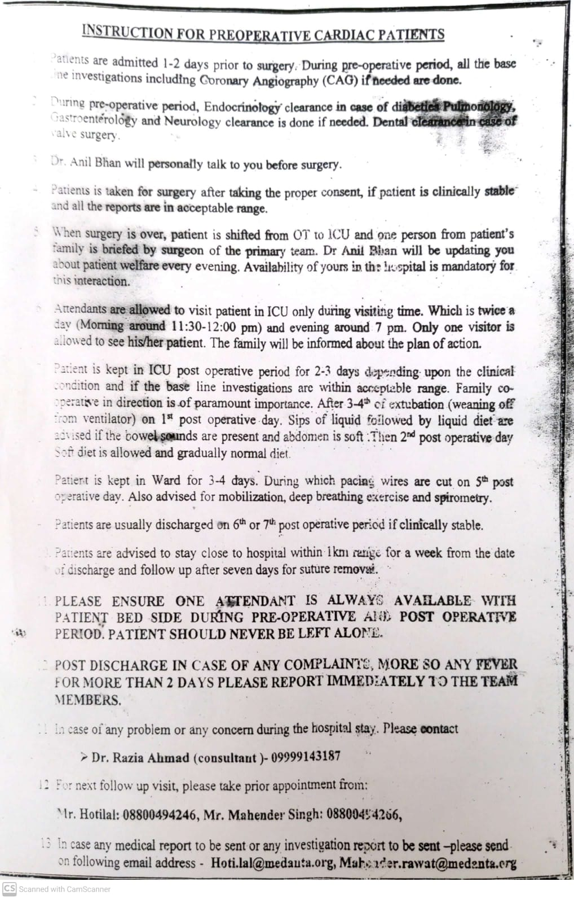
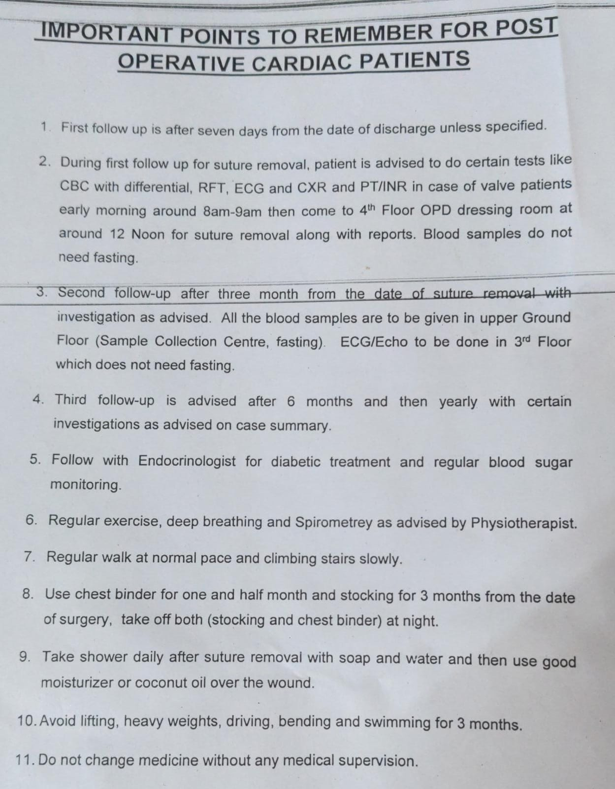
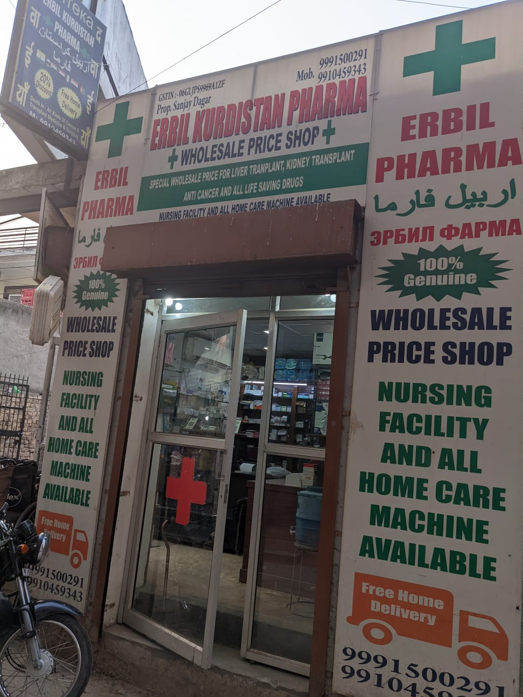

Two months ago dad felt a sharp pain in his chest during his morning walk. He slowed down his pace and trief to push through the pain thinking that it was just gastritis but when it reoccurred a few days later he decided to see a doctor. The doctor advised him to take a treadmill test (TMT). In a TMT the patient is made to march on a treadmill and then the ECG is measured after a specific interval. The TMT indicated mild ischemia. Ischemia simple means a restriction of blood flow to a part of the body. After this diagnosis his physician prescribed blood thinners to him immediately and advised him to undergo an angiography asap! However, my father mistakenly thought that since he felt better after taking the blood thinners and was able to resume walking without any discomfort therefore he didn't need to priotize his angiography. Another reason and I guess the most important reason was that none of us (his children) were in India with him and of course mom had dies last year so he was alone.
After his diagnosis I scheduled a two week trip to India at first thinking/hoping that we won't find anything significant since it was just "mild ischemia"[1] but I extended my trip to six weeks after the results came out. More on that below. Maybe at worst he will need an angioplasty and the whole procedure will only take a week or two from start to recovery. In any case, Papa scheduled the angiography at a hospital in Chanakyapuri called Primus which abuts the Saudi and the Korean embassies.[2] The angiography revealed very severe blockage. Instead of "mild ischemia" we found that 2 out of 4 arteries of the heart were blocked completely and a third artery was blocked 60%. Technically he was suffering from "Multi-vessel disease" with diffuse calcification of blood vessels. This set up the first big decision that we had to take : What surgery should we opt for?
You see, in the case of an emergency heart attack, one doesn't really have a lot of time to make a decision. Most probably in the case of a heart attack the doctor will prescribe a "Coronary Artery Bypass Graft" (CABG) also called an open heart surgery or a bypass surgery. In such an emergency situation one simply doesn't have time to think much. In our case, however, papa's condition required urgent attention but it was not an emergency! Moreover, my father's case was such that both possibilities (CABG and Angioplasty) were possible. In many cases, the course of action is self-evident, e.g. if a person is too weak or has comorbidities like severe diabetes which make cardiac surgery and post-op recovery too difficult then CABG may be too risky to even attempt. Since dad was not too frail, and he did not have diabetes, therefore the option for CABG was open. Also CABG is considered to be the better option for treating multi-vessel disease with diffuse blockage. However, recovering from CABG is still a lot more painful and therefore dad wanted to explore and see if an angioplasty could help us. To make things even more confusing there are a few different types of angioplasties:
So making a decision about which procedure to use was not at all easy. Therefore, we decided to give ourselves 1 week to gather opinions from multiple doctors. Specifically we wanted to get opinions from multiple "interventional cardiologists" who do angioplasties and "cardiac surgeons" who do CABG. I broadcasted a request to all my friends and family for recommendations about which doctors I should see. Not surprisingly a significant fraction of my friends and acquaintances knew some close family member, such as their father or mother-in-law or a grandparent who had undergone some sort of cardiac procedure. Heart diseases is a common risk associated with aging in India.
Before Surgery -- Gathering more opinions
Based on the advice from friends and family we booked appointments at the following hospitals
I'll have liked to say that we made a decision in a scientific manner, but mostly it came down to being risk averse and believing the words of Dr. Manchanda and Dr. Bhan who seemed to have the best credentials. So in conclusion we decided to get the CABG done at Medanta.
During and After Surgery
The cardiac surgery took place on Monday, and we got the following instruction sheets
|  |  |
To comply with these instructions we stayed at a guest house close to Medanta. Interestingly the neghborhood opposite to medanta has completely transformed into a hub of medical tourism probably singlehandedly because of Medanta and signs like the following are not uncommon now.

Conclusion
As of 7 May 2022 : Dad's cardiac surgery went well and he is now recovering. We got a massive help from CGHS which took care of the entire billed amount of Rs 1,70,000, and all-said, from my own biased vantage point, I can say that the system worked well for us.
Footnotes
[1] This is now the second time where I have underestimated the severity of early health warnings and mediacal tests and simple fevers. I think the issue is that all my past data was gathered when I was young and my parents were young and now I really should consciously recalibrate my responses to initial threat signals.
[2] The main reasons for chosing this hospital were that it was on the CGHS panel and also the closest hospital to our home in RK Puram where we could get an angiography. In hindsight, we should maybe have done the angiography at some other bigger hospital such as Fortis Okhla, or Medanta etc.
Please use ADBlock to remove DISQUS Ads.